🍄 This tutorial shows how to use MicroBioMeta on
shotgun metagenomic data, as an alternative to the
amplicon (metabarcoding) workflow covered in the Metabarcoding vignette. The functions and
most of their parameters are exactly the same across both workflows, so
they aren’t re-explained here only what’s specific to metagenomic data
is.
For this example, reads were taxonomically classified with Kraken2
(Wood et al.
2019) and abundance-corrected at the species level with Bracken
(Lu et al.
2017).
The data comes from forest soils along the Iztaccíhuatl-Popocatépetl (PNIP) and La Malinche (PNML) transects, Central Mexico:
Raw data, metadata and the original analysis scripts: github.com/Steph0522/Fungal_Metagenomes_PNIP_PNML
💻 Loading data
First, let’s load MicroBioMeta and
tidyverse (used for data wrangling):
Each sample was processed separately, so bracken_species
reports were merged into a single table beforehand (one column per
sample, named
kraken_pluspfp_<id_metagenome>_report_bracken_species)
with a taxonomy column already attached as
the last column:
table_kraken <- read.delim(
system.file("extdata", "table_kraken.txt", package = "MicroBioMeta"),
row.names = 1, check.names = FALSE
)
table_kraken[1:3, c(1:2, ncol(table_kraken))]## kraken_pluspfp_100_report_bracken_species
## 101028 1302
## 36050 161
## 56646 108
## kraken_pluspfp_105_report_bracken_species
## 101028 1066
## 36050 345
## 56646 203
## taxonomy
## 101028 k__Eukaryota; p__Ascomycota; c__Sordariomycetes; o__Hypocreales; f__Nectriaceae; g__Fusarium; s__pseudograminearum
## 36050 k__Eukaryota; p__Ascomycota; c__Sordariomycetes; o__Hypocreales; f__Nectriaceae; g__Fusarium; s__poae
## 56646 k__Eukaryota; p__Ascomycota; c__Sordariomycetes; o__Hypocreales; f__Nectriaceae; g__Fusarium; s__venenatumTaxonomy is already in the table so, there is no need to use
merge_feature_taxonomy() function.
⚠️ Taxonomy strings from Kraken2 use a
k__/p__/c__/… prefix like
SILVA/GTDB, but ranks are separated by "; " (semicolon
and space) instead of ";".
MicroBioMeta already accounts for this wherever a
taxonomy_db argument exists, just pass
taxonomy_db = "Kraken2".
Now, let’s load the metadata:
metadata_meta <- read.delim(
system.file("extdata", "metadata_metagenomic.txt", package = "MicroBioMeta"),
check.names = FALSE
)
head(metadata_meta[, 1:10])## SAMPLEID id_sequence id_metagenome Poligono Sitio Transecto id_new id_fisicoq
## 1 P1S1T1 111 140 1 1 1 30 30
## 2 P1S1T2 112 152 1 1 2 13 <NA>
## 3 P1S1T3 113 164 1 1 3 21 21
## 4 P1S2T1 121 176 1 2 1 11 11
## 5 P1S2T2 122 188 1 2 2 33 13,33
## 6 P1S2T3 123 121 1 2 3 12 12
## Sites Names
## 1 1 Tetlanohcan 1
## 2 1 Tetlanohcan 1
## 3 1 Tetlanohcan 1
## 4 2 Tetlanohcan 2
## 5 2 Tetlanohcan 2
## 6 2 Tetlanohcan 2Kraken column names encode a id_metagenome number
(e.g. kraken_pluspfp_100_report_bracken_species) rather
than the sample’s actual ID, so we recover it with a regular expression
and use metadata_meta$id_metagenome to rename each column
to its SampleID:
sample_cols <- setdiff(colnames(table_kraken), "taxonomy")
id_metagenome <- as.integer(gsub("kraken_pluspfp_|_report_bracken_species", "", sample_cols))
colnames(table_kraken)[match(sample_cols, colnames(table_kraken))] <-
metadata_meta$SAMPLEID[match(id_metagenome, metadata_meta$id_metagenome)]Let’s rename and format the metadata:
metadata_meta$Polygon <- factor(paste0("Pol", metadata_meta$Poligono), levels = paste0("Pol", 1:6))
metadata_meta$Site <- as.character(metadata_meta$Sitio)
table_meta <- table_kraken[, c(metadata_meta$SAMPLEID, "taxonomy")]Coordinates were taken and loaded:
coord_meta <- read.csv(
system.file("extdata", "coord_metagenomic.csv", package = "MicroBioMeta")
) %>%
dplyr::select(-Site) %>% # drop the CSV's own overall site index (1-12); we want `Sitio` (1-2) instead
dplyr::rename(Polygon_num = pol, Site = Sitio) %>%
dplyr::select(Polygon_num, Site, Transecto, Latitude, Longitude)
metadata_meta <- metadata_meta %>%
dplyr::mutate(Polygon_num = as.integer(gsub("Pol", "", Polygon)), Site = as.integer(Site)) %>%
dplyr::left_join(coord_meta, by = c("Polygon_num", "Site", "Transecto")) %>%
dplyr::mutate(Site = as.character(Site))🔄 Starting from a phyloseq or TreeSummarizedExperiment object
MicroBioMeta works with plain tables, but if your data
are already in a phyloseq object or in a
TreeSummarizedExperiment (the Bioconductor container used
by the mia
family of packages), from_phyloseq() and
from_tse() turn them into the table (with the
taxonomy column last) and metadata (with
SAMPLEID first) used in this vignette.
To show it, we pack the Kraken2 table into a
TreeSummarizedExperiment, with one taxonomy column per
rank, as mia would:
counts <- as.matrix(table_meta[, metadata_meta$SAMPLEID])
ranks <- tidyr::separate(
data.frame(taxonomy = gsub("[kpcofgs]__", "", table_meta$taxonomy)),
taxonomy, c("Kingdom", "Phylum", "Class", "Order", "Family", "Genus", "Species"),
sep = "; ", fill = "right"
)
rownames(ranks) <- rownames(table_meta)
samples <- metadata_meta
rownames(samples) <- samples$SAMPLEID
tse <- TreeSummarizedExperiment::TreeSummarizedExperiment(
assays = list(counts = counts),
rowData = ranks,
colData = samples
)
tse## class: TreeSummarizedExperiment
## dim: 87 36
## metadata(0):
## assays(1): counts
## rownames(87): 101028 36050 ... 208348 27350
## rowData names(7): Kingdom Phylum ... Genus Species
## colnames(36): P1S1T1 P1S1T2 ... P6S2T2 P6S2T3
## colData names(34): SAMPLEID id_sequence ... Latitude Longitude
## reducedDimNames(0):
## mainExpName: NULL
## altExpNames(0):
## rowLinks: NULL
## rowTree: NULL
## colLinks: NULL
## colTree: NULLfrom_tse() returns a list with the two data frames:
## P1S1T1 P1S1T2
## 101028 1985 4341
## 36050 236 231
## 56646 175 151
## taxonomy
## 101028 k__Eukaryota; p__Ascomycota; c__Sordariomycetes; o__Hypocreales; f__Nectriaceae; g__Fusarium; s__pseudograminearum
## 36050 k__Eukaryota; p__Ascomycota; c__Sordariomycetes; o__Hypocreales; f__Nectriaceae; g__Fusarium; s__poae
## 56646 k__Eukaryota; p__Ascomycota; c__Sordariomycetes; o__Hypocreales; f__Nectriaceae; g__Fusarium; s__venenatum
mbm$metadata[1:3, 1:5]## SAMPLEID id_sequence id_metagenome Poligono Sitio
## 1 P1S1T1 111 140 1 1
## 2 P1S1T2 112 152 1 1
## 3 P1S1T3 113 164 1 1and those can go straight into any function,
e.g. abundance_bar_plot(table = mbm$table, metadata = mbm$metadata, ...).
With a phyloseq object it works the same way:
mbm <- from_phyloseq(physeq)📊 Composition exploration
📊 Abundance barplot
Same function as in the metabarcoding vignette; the only difference
is taxonomy_db = "Kraken2", which tells the
taxonomy-parsing logic to expect Kraken2/Bracken-style strings.
abundance_bar_plot(table = table_meta,
metadata = metadata_meta,
taxonomy_db = "Kraken2",
level = "genus",
top_n = 20,
x_col = "Polygon",
x_axis_title = "Polygons",
add_remained = TRUE,
label = "Genus",
save_table = FALSE)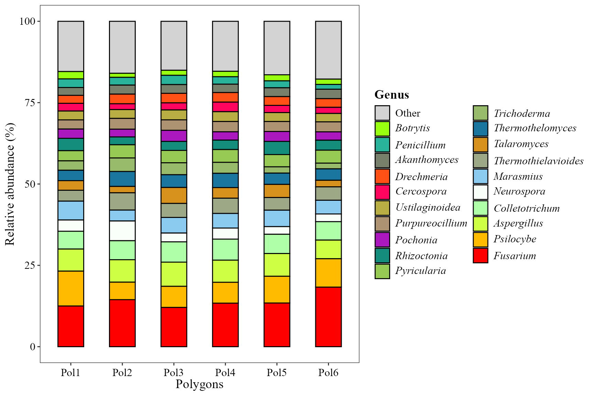
🖥️ Abundance heatmap
Kraken2/Bracken taxa aren’t ASVs, so
feature_prefix = "Taxon" is used here instead of the
default "ASV" row-label prefix. condition2
adds a second annotation bar, here the sampling site within each
polygon.
abundance_heatmap_plot(table = table_meta,
metadata = metadata_meta,
top_n = 20,
show_column_names = FALSE,
condition1 = "Polygon",
condition2 = "Site",
feature_prefix = "Taxon")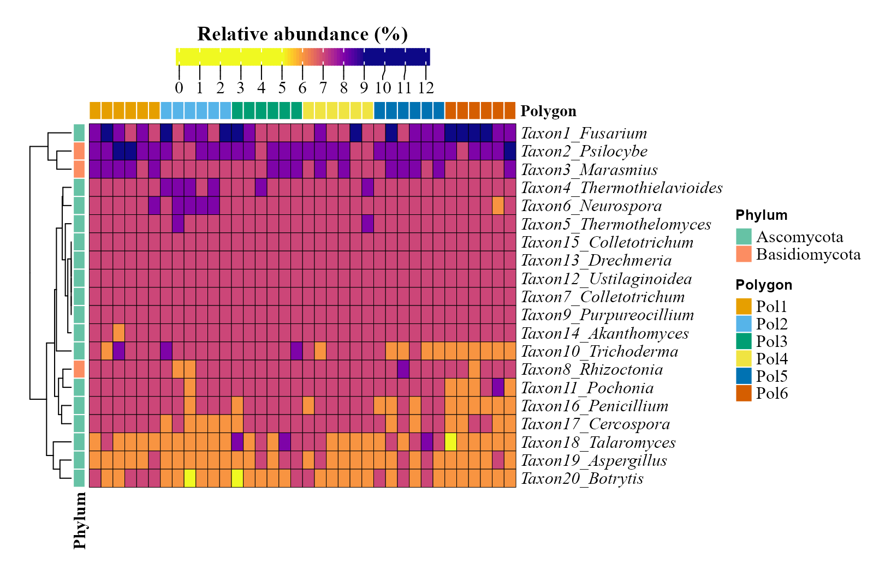
📊 Alpha diversity
As in the metabarcoding vignette,
alpha_hill_corr_plot(table = table_meta) can be used first
to check whether the Hill numbers depend on sequencing depth.
📊 Alpha diversity visualization
fill_col is the same as x_col here, so the
legend would just repeat the x-axis tick labels -
show_legend = FALSE drops it.
alpha_hill_plot(table = table_meta,
metadata = metadata_meta,
x_col = "Polygon",
fill_col = "Polygon",
facet_by = "Site",
facet_orientation = "horizontal",
legend_title = "",
stat = "kruskal.test",
show_legend = FALSE,
save_table = FALSE)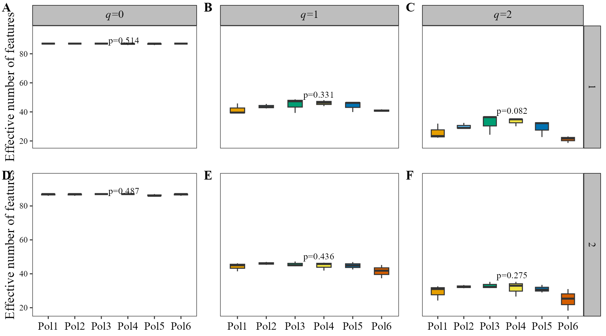
Richness (q=0) is nearly saturated and flat across blocks here — this genus-level Bracken table simply doesn’t have much room left to vary at q=0 — while q=1 and q=2 (which weight by relative abundance) do pick up differences between blocks.
Alpha diversity along a continuous gradient
alpha_decay_plot(table = table_meta,
metadata = metadata_meta,
cont_var = "pH",
x_axis_title = "Soil pH")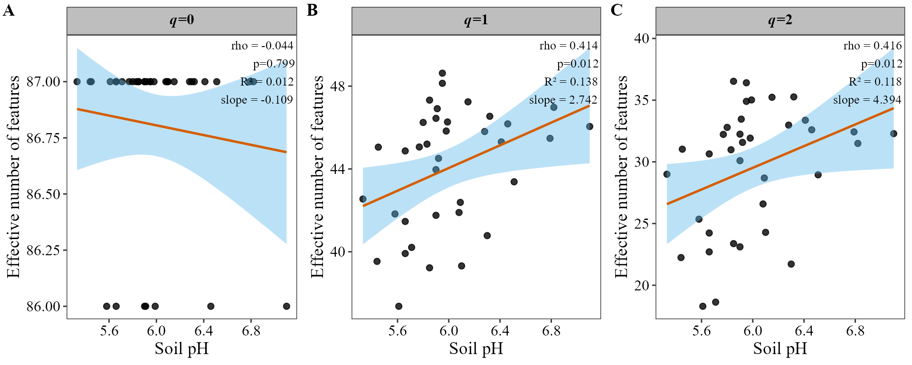
Diversity at q=1 and q=2 increases significantly with soil pH; q=0 doesn’t, for the same ceiling-effect reason as above.
Beta diversity
Ordination of community composition
Here we use Bray-Curtis dissimilarity, which takes
into account the abundance of each taxon, with an NMDS
ordination. NMDS starts from random configurations, so we use
set.seed() to get the same plot every time:
set.seed(123)
beta_ord_plot(table = table_meta,
metadata = metadata_meta,
distance = "bray",
ordination = "NMDS",
group_col = "Polygon")## Run 0 stress 0.109415
## Run 1 stress 0.1100308
## Run 2 stress 0.1436787
## Run 3 stress 0.109415
## ... New best solution
## ... Procrustes: rmse 4.898679e-05 max resid 0.0002427814
## ... Similar to previous best
## Run 4 stress 0.1282595
## Run 5 stress 0.109415
## ... Procrustes: rmse 5.347491e-05 max resid 0.0002695176
## ... Similar to previous best
## Run 6 stress 0.1100308
## Run 7 stress 0.1360412
## Run 8 stress 0.1426357
## Run 9 stress 0.1100309
## Run 10 stress 0.1360412
## Run 11 stress 0.1095935
## ... Procrustes: rmse 0.01783814 max resid 0.09869714
## Run 12 stress 0.1095934
## ... Procrustes: rmse 0.01783822 max resid 0.09870617
## Run 13 stress 0.1282595
## Run 14 stress 0.109415
## ... Procrustes: rmse 2.319858e-05 max resid 0.0001086243
## ... Similar to previous best
## Run 15 stress 0.1360412
## Run 16 stress 0.109415
## ... New best solution
## ... Procrustes: rmse 1.046168e-05 max resid 5.28883e-05
## ... Similar to previous best
## Run 17 stress 0.109415
## ... Procrustes: rmse 2.890036e-05 max resid 0.0001565367
## ... Similar to previous best
## Run 18 stress 0.109415
## ... Procrustes: rmse 1.762475e-05 max resid 8.27359e-05
## ... Similar to previous best
## Run 19 stress 0.1095934
## ... Procrustes: rmse 0.01783515 max resid 0.09870479
## Run 20 stress 0.1100308
## *** Best solution repeated 3 times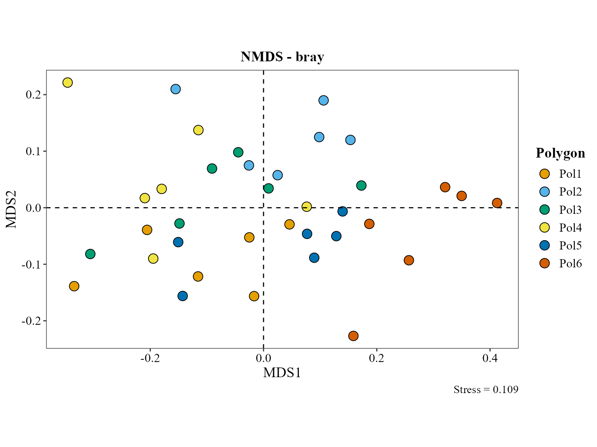
Statistical tests for beta diversity
distance = "bray" matches the one used for the
ordination above, so the ordination (via the vegan package
(Oksanen et al. 2024)) and the PERMANOVA
significance test (Anderson 2001) are
evaluating the same notion of dissimilarity.
beta_test_table(table = table_meta,
metadata = metadata_meta,
formula_str = "Polygon*Site",
distance = "bray",
test = "permanova",
permutations = 999)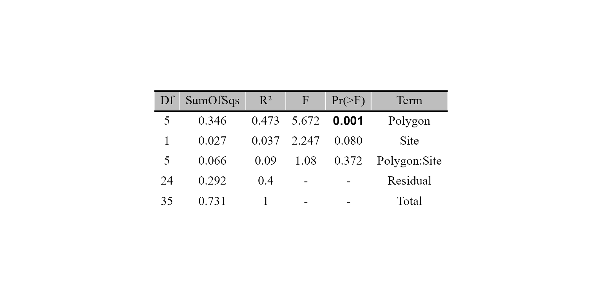
Distance-decay of community similarity
beta_decay_plot() tests whether communities that are
geographically closer are also more similar in composition, via a Mantel
test (Mantel
1967):
beta_decay_plot(
table = table_meta,
metadata = metadata_meta,
lat_col = "Latitude",
lon_col = "Longitude",
distance = "bray"
)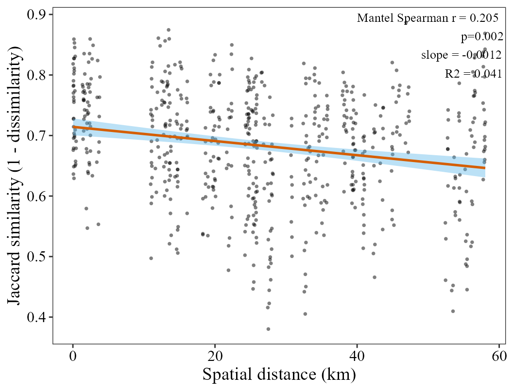
Communities that are geographically closer are significantly more
similar in composition (Mantel r ≈ 0.21, p ≈ 0.001;
the exact p-value jitters slightly between runs since the Mantel test is
permutation-based), a real distance-decay signal across these forest
soils. The relationship is weak, though: distance explains only about 4
% of the variation in similarity (R² ≈ 0.04). bray is used
to be consistent with the ordination above.
Differential abundant analysis
For the heatmap (ALDEx2 (Fernandes et al. 2014)) and
ANCOMBC2 (Lin and
Peddada 2020) versions we need a 2-group subset of the
6-level Polygon, in this part we will compare Polygon 2 and
5:
metadata_meta_compar <- metadata_meta %>%
filter(Polygon == "Pol2" | Polygon == "Pol5")
table_meta_compar <- table_meta[, c(match(metadata_meta_compar$SAMPLEID, colnames(table_meta)), ncol(table_meta))]
aldex_heatmap_plot(table = table_meta_compar,
metadata = metadata_meta_compar,
group_col = "Polygon")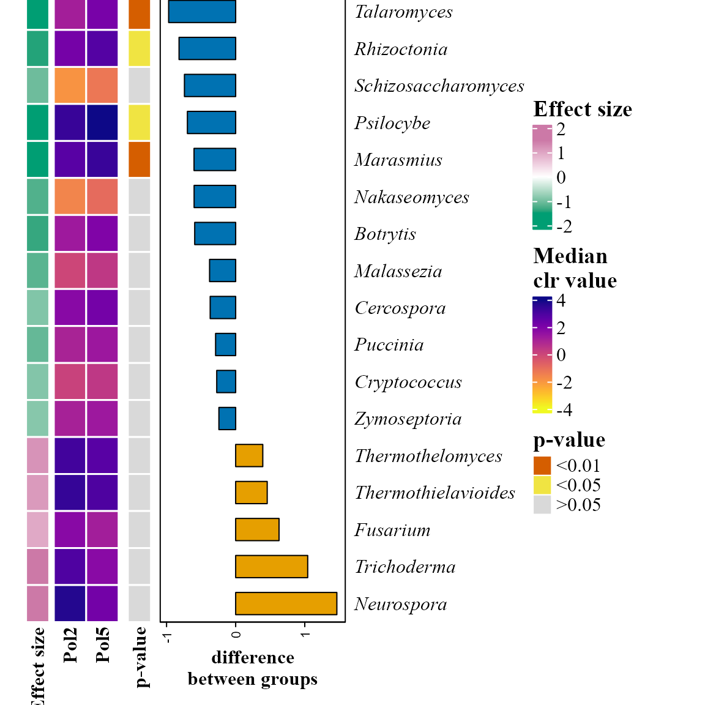
ancombc_plot(
table = table_meta_compar,
metadata = metadata_meta_compar,
group_col = "Polygon",
level = "Genus",
min_prevalence = 0.05,
p_adjust_method = "BH"
)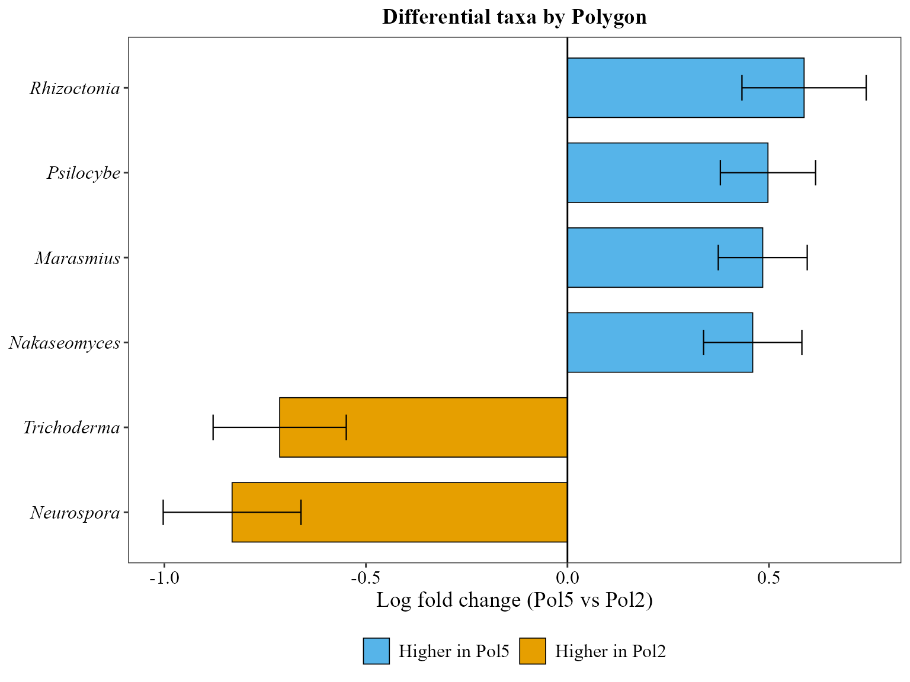
Identifying important taxa
random_forest_lollipop_plot() uses a Random Forest model
(Breiman
2001) to find the taxa that best predict the polygon:
random_forest_lollipop_plot(table = table_meta, metadata = metadata_meta, top_n = 10, variable_to_predict = "Polygon")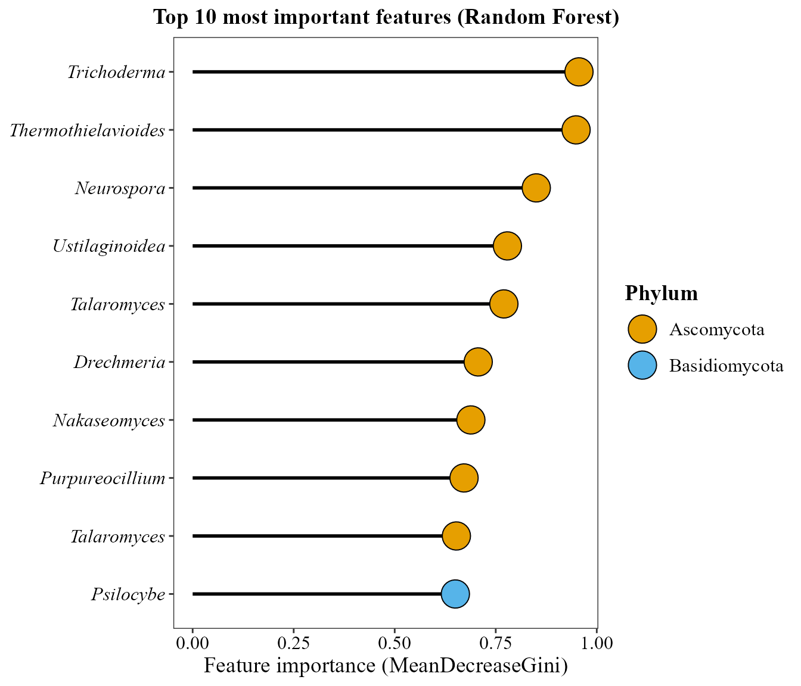
ratios_bubble_plot(table = table_meta_compar,
metadata = metadata_meta_compar,
group_col = "Polygon",
top_n = 20,
condition_A = "Pol2",
condition_B = "Pol5")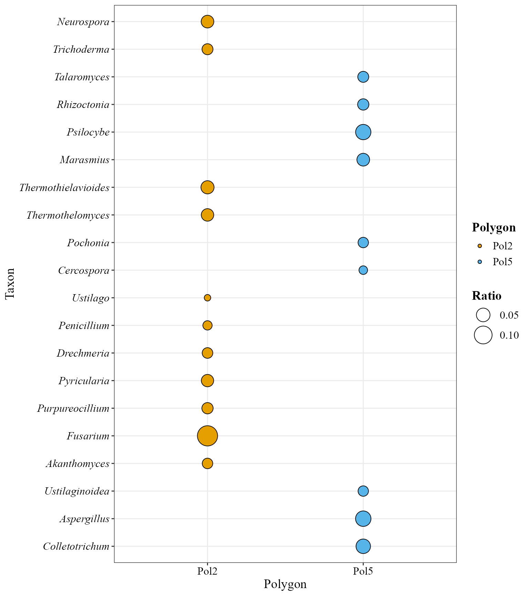
Environmental analyses
The metadata already carries the soil physicochemical variables measured for these samples, so the environmental table is built the same way as in the metabarcoding vignette:
env_table_meta <- metadata_meta %>%
dplyr::select(SAMPLEID, pH:ARENA) %>%
remove_rownames() %>%
column_to_rownames(var = "SAMPLEID")Correlation between environmental variables and taxonomic abundance
corr_env_abund_plot(table = table_meta,
env_data = env_table_meta,
metadata = metadata_meta,
taxonomy_db = "Kraken2",
level = "phylum",
save_table = FALSE)## Warning in corr_env_abund_plot(table = table_meta, env_data = env_table_meta, :
## Dropping non-numeric columns from `env_data`: type, type2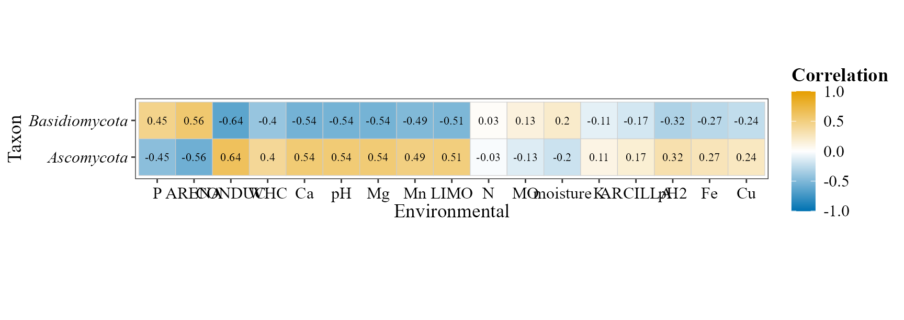
Constrained ordination (CCA)
env_table_meta <- env_table_meta[
match(metadata_meta$SAMPLEID, rownames(env_table_meta)), , drop = FALSE]
cca_rda_biplot(table = table_meta,
env_data = env_table_meta,
metadata = metadata_meta,
env_vars = c("pH", "MO", "N", "P", "K"),
analysis = "CCA",
show_all_env_vectors = TRUE,
group_col = "Polygon",
scale_arrows = 3)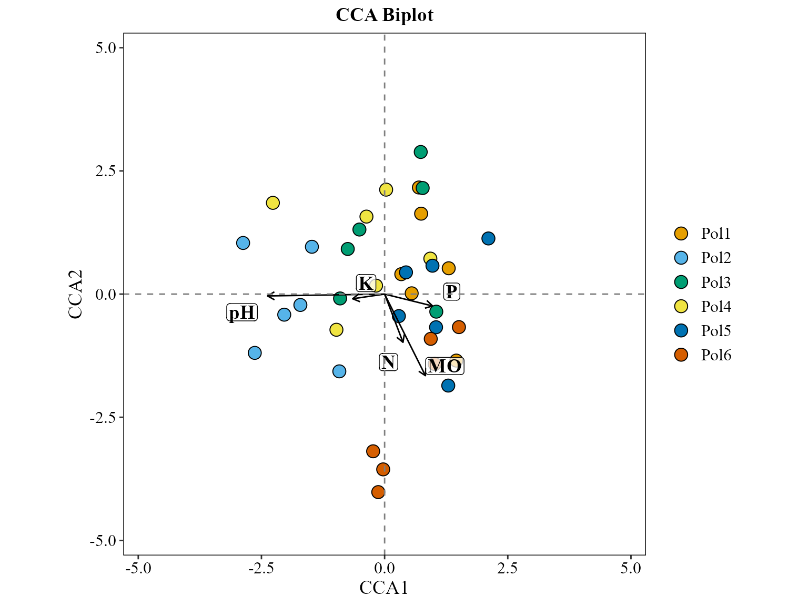
References
Session info
## R version 4.6.1 (2026-06-24 ucrt)
## Platform: x86_64-w64-mingw32/x64
## Running under: Windows 10 x64 (build 19045)
##
## Matrix products: default
## LAPACK version 3.12.1
##
## locale:
## [1] LC_COLLATE=Spanish_Latin America.utf8
## [2] LC_CTYPE=Spanish_Latin America.utf8
## [3] LC_MONETARY=Spanish_Latin America.utf8
## [4] LC_NUMERIC=C
## [5] LC_TIME=Spanish_Latin America.utf8
##
## time zone: America/Mexico_City
## tzcode source: internal
##
## attached base packages:
## [1] stats graphics grDevices utils datasets methods base
##
## other attached packages:
## [1] doRNG_1.8.6.3 rngtools_1.5.2 foreach_1.5.2
## [4] lubridate_1.9.5 forcats_1.0.1 stringr_1.6.0
## [7] dplyr_1.2.1 purrr_1.2.2 readr_2.2.0
## [10] tidyr_1.3.2 tibble_3.3.1 ggplot2_4.0.3
## [13] tidyverse_2.0.0 MicroBioMeta_0.99.0
##
## loaded via a namespace (and not attached):
## [1] splines_4.6.1 cellranger_1.1.0
## [3] rpart_4.1.27 lifecycle_1.0.5
## [5] Rdpack_2.6.6 rstatix_1.1.0
## [7] doParallel_1.0.17 lattice_0.22-9
## [9] MASS_7.3-65 backports_1.5.1
## [11] hillR_0.5.2 magrittr_2.0.5
## [13] Hmisc_5.3-0 sass_0.4.10
## [15] rmarkdown_2.32 jquerylib_0.1.4
## [17] yaml_2.3.12 otel_0.2.0
## [19] ggvenn_0.1.19 gld_2.6.8
## [21] minqa_1.2.8 cowplot_1.2.0
## [23] RColorBrewer_1.1-3 multcomp_1.4-32
## [25] abind_1.4-8 quadprog_1.5-8
## [27] expm_1.0-1 GenomicRanges_1.64.0
## [29] BiocGenerics_0.58.1 TH.data_1.1-5
## [31] yulab.utils_0.2.5 nnet_7.3-20
## [33] sandwich_3.1-3 rappdirs_0.3.4
## [35] circlize_0.4.18 IRanges_2.46.0
## [37] S4Vectors_0.50.3 ggrepel_0.9.8
## [39] tidytree_0.4.8 vegan_2.7-6
## [41] pkgdown_2.2.1 permute_0.9-10
## [43] codetools_0.2-20 DelayedArray_0.38.2
## [45] energy_1.7-12 tidyselect_1.2.1
## [47] shape_1.4.6.1 farver_2.1.2
## [49] lme4_2.0-6 viridis_0.6.5
## [51] matrixStats_1.5.0 stats4_4.6.1
## [53] base64enc_0.1-6 Seqinfo_1.2.0
## [55] ALDEx2_1.44.0 jsonlite_2.0.0
## [57] GetoptLong_1.1.1 multtest_2.68.0
## [59] e1071_1.7-17 Formula_1.2-6
## [61] survival_3.8-6 iterators_1.0.14
## [63] systemfonts_1.3.2 tools_4.6.1
## [65] treeio_1.36.1 ragg_1.5.2
## [67] DescTools_0.99.60 Rcpp_1.1.2
## [69] ggVennDiagram_1.5.7 glue_1.8.1
## [71] gridExtra_2.3.1 SparseArray_1.12.2
## [73] xfun_0.61 mgcv_1.9-4
## [75] MatrixGenerics_1.24.0 TreeSummarizedExperiment_2.20.0
## [77] numDeriv_2016.8-1.1 withr_3.0.3
## [79] fastmap_1.2.0 ggh4x_0.3.1
## [81] latticeExtra_0.6-31 boot_1.3-32
## [83] digest_0.6.39 truncnorm_1.0-9
## [85] timechange_0.4.0 R6_2.6.1
## [87] textshaping_1.0.5 colorspace_2.1-3
## [89] Cairo_1.7-0 gtools_3.9.5
## [91] jpeg_0.1-11 dichromat_2.0-1
## [93] generics_0.1.4 data.table_1.18.6.1
## [95] class_7.3-23 httr_1.4.9
## [97] htmlwidgets_1.6.4 S4Arrays_1.12.0
## [99] pkgconfig_2.0.3 gtable_0.3.6
## [101] Exact_3.3 zCompositions_1.6.2
## [103] ComplexHeatmap_2.28.0 S7_0.2.2
## [105] SingleCellExperiment_1.34.0 XVector_0.52.0
## [107] htmltools_0.5.9 carData_3.0-6
## [109] zigg_0.0.2 clue_0.3-68
## [111] scales_1.4.0 Biobase_2.72.0
## [113] lmom_3.3 png_0.1-9
## [115] reformulas_0.4.4 ANCOMBC_2.14.0
## [117] knitr_1.52 rstudioapi_0.19.0
## [119] reshape2_1.4.5 geosphere_1.6-8
## [121] tzdb_0.5.0 rjson_0.2.23
## [123] nloptr_2.2.1 checkmate_2.3.4
## [125] nlme_3.1-169 zoo_1.9-1
## [127] proxy_0.4-29 cachem_1.1.0
## [129] GlobalOptions_0.1.4 rootSolve_1.8.2.4
## [131] parallel_4.6.1 foreign_0.8-91
## [133] desc_1.4.3 pillar_1.11.1
## [135] grid_4.6.1 vctrs_0.7.3
## [137] randomForest_4.7-1.2 ggpubr_1.0.0
## [139] car_3.1-5 cluster_2.1.8.2
## [141] htmlTable_2.5.0 evaluate_1.0.5
## [143] magick_2.9.1 mvtnorm_1.4-2
## [145] cli_3.6.6 compiler_4.6.1
## [147] rlang_1.3.0 crayon_1.5.3
## [149] ggsignif_0.6.4 labeling_0.4.3
## [151] interp_1.1-6 plyr_1.8.9
## [153] fs_2.1.0 stringi_1.8.9
## [155] viridisLite_0.4.3 deldir_2.0-4
## [157] BiocParallel_1.46.0 lmerTest_3.2-1
## [159] gsl_2.1-9 Biostrings_2.80.2
## [161] lazyeval_0.2.3 Matrix_1.7-5
## [163] hms_1.1.4 patchwork_1.3.2
## [165] NADA_1.6-1.2 SummarizedExperiment_1.42.0
## [167] haven_2.5.5 rbibutils_2.4.1
## [169] Rfast_2.1.5.2 broom_1.0.13
## [171] RcppParallel_6.2.1 bslib_0.12.0
## [173] directlabels_2026.8.27 readxl_1.5.0.1
## [175] ape_5.8-1